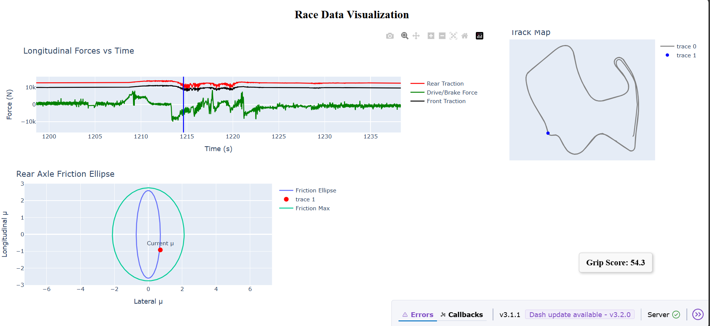
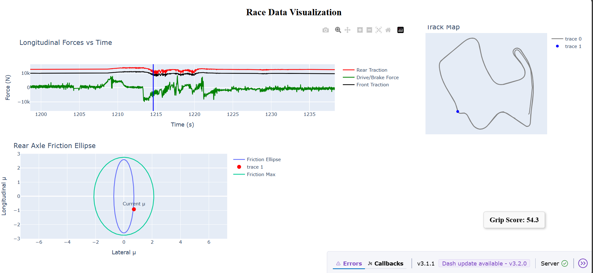

Company Description
Google’s mission is to organize the world’s information and make it universally accessible and useful. Founded in 1998 by Larry Page and Sergey Brin, Google has grown from a dorm-room project into a global technology leader, creating products that serve billions of users daily, including Google Search, YouTube, Android, Gmail, and Google Cloud. At its core, Google leverages cutting-edge technology, artificial intelligence, and machine learning to solve complex problems, enhance user experiences, and enable meaningful connections worldwide. Beyond products, Google drives innovation through AI research, exploring applications in natural language processing, computer vision, generative AI, and large-scale data systems. The company prioritizes accessibility, fairness, and inclusivity in all its technological solutions, ensuring that its impact benefits communities globally while maintaining a culture of collaboration, creativity, and ethical innovation.
Scope
At Google, the scope of work is broad and impactful, spanning multiple domains including AI, ML, cloud computing, computer vision, natural language processing, and generative AI. Engineers contribute to projects that operate at massive scale, influencing billions of users globally. Whether implementing computer vision solutions for YouTube, developing LLM-based tools for Search, or creating multi-modal generative AI models for Google Cloud, the scope involves both deep technical challenges and strategic innovation. Projects require designing scalable infrastructure, optimizing model performance, processing vast datasets, and building systems that are reliable, efficient, and secure. The work scope is not limited to individual contributions—engineers collaborate across teams, bridging research and production, while maintaining a focus on solving real-world problems that enhance accessibility, usability, and fairness for end-users everywhere.
Work Culture
Google fosters a unique, collaborative, and innovative work culture. Creativity, curiosity, and experimentation are highly encouraged, allowing teams to explore unconventional solutions while adhering to best practices. The company values diversity and inclusivity, emphasizing that teams should reflect the communities their products serve. Cross-functional collaboration is common, and employees are empowered to contribute ideas, challenge assumptions, and participate in decision-making processes. Google also prioritizes learning and professional growth, providing access to state-of-the-art technologies, mentorship programs, and opportunities to rotate across teams. Work-life balance, employee well-being, and a supportive environment contribute to a culture where innovation thrives and everyone can meaningfully impact technology for billions of users.
Motivation to Join KNAPP
I am motivated to work at Google because of its unparalleled commitment to leveraging technology to solve complex, real-world problems at scale. The opportunity to work on projects involving AI, ML, computer vision, and generative AI, while directly impacting billions of users, aligns perfectly with my passion for applying technical knowledge to meaningful challenges. Google’s focus on fairness, accessibility, and inclusivity resonates with my values, and the company’s culture of innovation, collaboration, and continuous learning inspires me to contribute my best. Being part of an organization that encourages experimentation, embraces emerging technologies, and pushes the boundaries of what’s possible motivates me to grow as an engineer while contributing to transformative solutions.
Why I am a Great Fit
I am a strong fit for this role because my academic and professional background aligns closely with Google’s technical and cultural requirements. I have experience in AI, ML, computer vision, deep learning, and large-scale data processing, with hands-on expertise in Python, C++, R, SQL, ROS2, TensorFlow, PyTorch, and relevant frameworks. My work on autonomous vehicles, medical image registration, and real-time API systems demonstrates my ability to design, optimize, and deploy complex software solutions. I am a fast learner, capable of adapting to new technologies and concepts, and I thrive in collaborative, cross-functional environments. My problem-solving skills, combined with strong teamwork, leadership experience, and a commitment to delivering high-quality results, make me well-prepared to contribute effectively to Google’s projects and culture.
Work Experience
Research Engineer, VAIL IU

 

State estimation, vehicle dynamics, and control development for IU Luddy Racing’s autonomous Indy Autonomous Challenge car.
Research Engineer, Vehicle Autonomy and Intelligence Lab – IU Luddy Racing
I joined the team in August 2024, about seven months into development, shortly after IU Luddy Racing announced its participation in the Indy Autonomous Challenge (IAC). My focus was on state estimation and vehicle dynamics, working alongside the controller and localization leads to solve state-related problems and refine the dynamics model.
After onboarding, I identified the need for a more advanced dynamics model and proposed a grip prediction module to estimate traction limits. This allowed us to design safer, more aggressive velocity profiles using offline planners. I also analyzed engine performance data, building strategies for optimal gear shifting based on ECU and dynamometer data to adapt power delivery to track demands.
Our first dynamic module control tests took place at Las Vegas Motor Speedway (LVMS) in January 2025, showing promising results. Over the next months, we prepared for multi-car racing, updating the stack for robustness and safety. In July 2025, we competed at Laguna Seca Raceway against eight international teams. Despite a late practice crash that forced speed adjustments, we achieved 4th place overall – a strong showing for our first-ever road course race and only our third competition as a new team.
These milestones gave us valuable data on vehicle dynamics, localization, and controller behavior. Going forward, I continue developing new modules to push performance and safety, helping IU Luddy Racing compete at the cutting edge of autonomous motorsport.
AI Head, DentalMatrix.ai
Co-founded and developed a unified dental platform with real-time ETL pipelines and a fine-tuned AI agent for actionable practice insights.
AI Head, DentalMatrix.ai
At DentalMatrix.ai, we built a platform to help dental clinics unify their patient and lead data. Clinics often manage patient records in OpenDental and track new inquiries in GoHighLevel CRM. Our solution integrates these systems into a single database, allowing clinics to track existing patients and potential leads in one place. This unified data enables clinics to target marketing campaigns, convert potential patients into real appointments, and improve overall operational efficiency. So with this I started working on sync operations using API on September 2024
We also developed a domain-specific AI Agent to interact with clinic staff. Unlike generic chatbots, this agent is fine-tuned on dental terminology, CRM data structures, and official dental abbreviations. It provides answers to natural-language questions with either textual explanations or data visualizations. Examples of queries include: "Which procedures have the highest write-offs?" or "Show conversion rates for new patient inquiries this month."
The AI Agent uses a Qwen-3 base model for its multilingual capabilities, allowing clinics to translate campaigns and communications into languages like Spanish automatically. Fine-tuning was performed on 2× H100 GPUs using DeepSpeed, Fully Sharded Data Parallel (FSDP), and parallel computing to accelerate training and optimize performance.
The backend includes a robust ETL pipeline that extracts and synchronizes structured data from OpenDental and the CRM into a centralized relational database. This enables real-time CRUD operations and ensures all patient and lead information is immediately up-to-date.
When asked about "Which procedures have the highest write-offs?", the agent reaponse as text was "The WriteOff is calculated as: (Sum of all fees on procedures - Sum of all insurance estimates and insurance payments received) + WriteoffsAlreadySent. It's not just a simple sum of all writeoffs. The user can never directly edit this field, but it is possible to set it blank. If the WriteOff value is higher than the WriteOffEst, then we show the WriteOff value in color red. This means that it has been manually altered from the estimate. We don't currently track who changed it.", and the visual response as shown below
This platform provides dental clinics with a unified view of all contacts, actionable insights for resource planning, marketing, and patient management, and an intelligent assistant designed specifically for dental operations. With this foundation, clinics can better understand patient needs, optimize marketing efforts, and deliver higher quality care efficiently.
Research Assistant, Frontiers of Optical Imaging and Biology Lab
Developed a dynamic 3D image registration pipeline to correct cellular-level motion in high-resolution eye scans across multiple subjects.
Research Assistant, Frontiers of Optical Imaging and Biology Lab
In this research, I worked on aligning 3D eye scan datasets from humans, mice, and bovine subjects. Each scan captures cellular structures at 2 µm focus, where even small biological motions or scanner delays cause misalignment. The goal was to dynamically correct drift while preserving the natural movement of cells.
The workflow included:
- Pixel classification: Identified cell bodies, nuclei, and background pixels using intensity distribution and pooling. Noise pixels were removed.
- Dynamic registration: Sequentially aligned frames by tracking drift and adjusting each frame relative to the first, while allowing live cells to move naturally.
- Subject-agnostic design: The code works across different species and datasets without manual tuning.
The registration consistently produced highly quality alignment with 97% and at 6.5 MB/s processing speed, making cellular structures clearly visible in top, front, and side views, and enabling downstream analysis of cell motion and behavior.
Consultant, EDD chat assistant
Developed an AI-driven tool to assist Economic Development Districts (EDDs) in creating Comprehensive Economic Development Strategies (CEDS).
Consultant, EDD chat assistant
From August 2024 to January 2025, I worked on integrating AI into the **CEDS creation process** for under-resourced Economic Development Districts (EDDs). The CEDS is a strategic plan used to drive regional economic growth and is critical for securing federal funding through the Economic Development Administration (EDA). Many EDDs face challenges in creating strong CEDS documents due to limited resources, expertise, and access to data.
Problem: Creating a robust CEDS is time-intensive and requires data analysis, stakeholder engagement, and alignment with EDA guidelines. Smaller districts often struggle to meet these requirements, delaying funding and limiting economic development opportunities.
Solution: The project aimed to develop an AI-driven CEDS generator that leverages generative AI and transformer-based models to automate key parts of the process. Key features include:
- Structured Input Interface: Predefined fields for entering regional data to ensure alignment with EDA guidelines.
- LLM Integration: Large language models process inputs and generate region-specific strategies using historical CEDS data.
- SWOT Automation: AI-assisted SWOT analyses and strategic recommendations based on regional data.
- Evaluation Framework Alignment: Automated feedback to ensure generated CEDS meets EDA evaluation criteria.
- Scalability: Modular design allowing use across multiple EDDs with regional customization.
Implementation Strategy: - Built a prototype integrating AI( used VLLM mistral architecture with mutiple Lora adaptors targeting different layers of base model) with SWOT analysis and draft CEDS generation. - Used cosine similarity to compare generated content against approved CEDS documents, focusing on areas like climate resilience and equity. - Incorporated feedback loops for planners to iteratively refine inputs and outputs. - Designed front-end mockups and modular agent frameworks for user-friendly interaction.
Impact: This project demonstrated the potential for AI to streamline CEDS creation, automate labor-intensive tasks, and improve document quality and compliance. The prototype empowered planners to create data-backed, EDA-compliant strategies more efficiently. While I paused working on this project after January 2025 due to time constraints, the foundation provides a scalable framework for future AI-assisted economic development tools.
Impact Projects
Full-Stack Web Application
Developed a full-stack web application using the MERN stack to manage customer preferences, allergies, and reservations efficiently.
Full-Stack Web Application for Restaurants | MERN Stack, Render
The goal was to create a comprehensive web application for restaurant owners and staff to store, retrieve, and manage customer details effectively.
This system centralizes key customer information, including food preferences, allergies, and special preparation instructions, ensuring both safety and personalized service. By integrating a user friendly interface, restaurant staff can efficiently handle reservations, walk-ins, and customer updates with minimal errors.
Technically, the application leverages the MERN stack (MongoDB, Express, React, Node.js) for full stack functionality, combined with Render for hosting. For advanced data processing and scalability, Databricks was used to enable large-scale machine learning workflows and optimized database queries.
Impact: This solution enhances restaurant operations by providing a reliable, intuitive system for managing customer data. It improves the overall dining experience by allowing staff to cater to individual preferences, manage allergies safely, and streamline food preparation workflows. Compared to existing systems, our application offers better integration, usability, and customization for the hospitality industry.

Clicks Usage Analysis
Analyzed and visualized user interaction data for the CCF's User Interfaces using Google Analytics
Analyzing and Visualizing Usage for Common Coordinate Framework User Interfaces | Google Analytics
This project focused on understanding how users interact with the Registration User Interface (RUI) and Exploration User Interface (EUI) of the Common Coordinate Framework (CCF), developed by Indiana University's Cyberinfrastructure for Network Science Center. By leveraging Google Analytics data, we examined user behavior patterns, element usage frequency, and engagement with spatial search and opacity features.
The project involved cleaning and preprocessing a dataset of 192,271 user events, including event timestamps, page locations, and user identifiers. Critical steps included converting Unix epoch timestamps to human-readable formats, handling missing data, and ensuring data consistency for accurate analysis.
Our objectives were to:
- Analyze frequency distributions of user events, such as clicks, mouse movements, and interactions with UI elements.
- Identify the most and least used interface components to understand user engagement.
- Quantify the frequency of opacity changes in the RUI and assess spatial search usage in the EUI.
- Provide insights to guide interface improvements and feature prioritization.
Visualization techniques included time series analysis to capture engagement trends, bar and pie charts to illustrate UI element usage, and histograms for opacity and spatial search events. Key insights revealed:
- Fluctuating engagement over time, highlighting peak usage periods and optimal times for feature rollouts.
- High interaction with central UI elements, with underutilized features identified for refinement.
- Specific adoption patterns of spatial search, suggesting areas for personalized feature enhancements.
- Opacity adjustments in the RUI indicating user interest in visual customization, guiding future UI enhancements.
During validation, we addressed challenges such as data complexity, event identification, missing values, and visualization clarity by:
- Implementing sophisticated data filtering and segmentation.
- Standardizing timestamps and handling missing values through imputation or exclusion.
- Creating focused, user-centric visualizations for each analytical question.
- Categorizing user events with refined approaches to highlight meaningful interactions.
This work emphasizes the importance of continuous monitoring and data-driven design for improving UI usability. Insights from this analysis can inform longitudinal studies, user segmentation, interface personalization, and potential automated feedback loops, contributing to more responsive and user-friendly CCF interfaces.
Acknowledgments: Special thanks to Andreas Bueckle and Michael Patrick Ginda for guidance, and to all Indiana University Bloomington Visual Analytics course staff for their support.